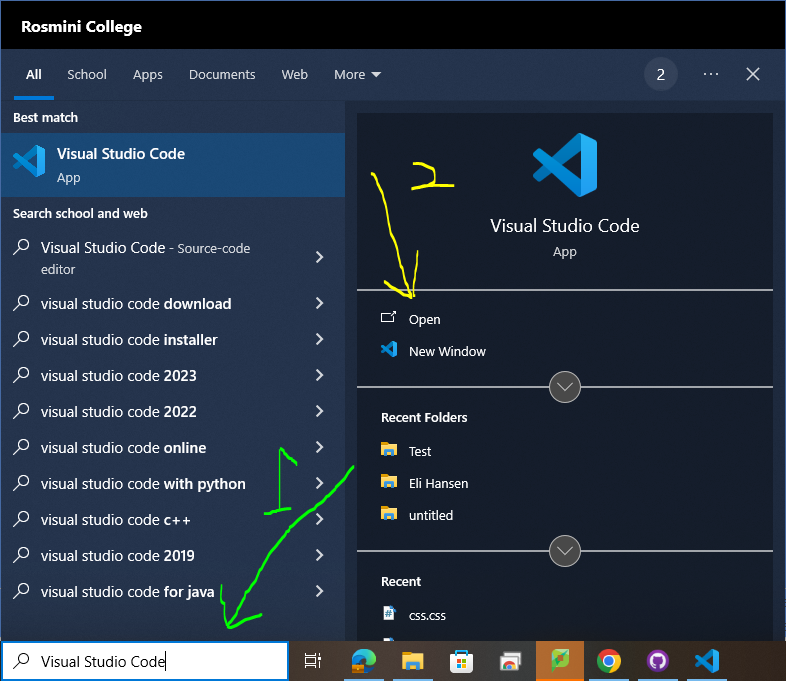
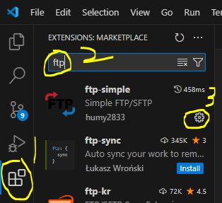
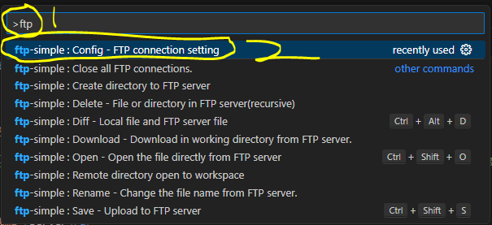
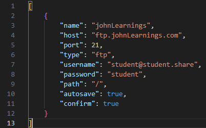

type visual studio code into the windows serch bar
then open vs code

inside vs code go to the exstention tab and serch for ftp simple and then press install

once installed press "control+shift+p" then type "ftp-simple:config" and open it

copy and past this code into the tab that we just opend